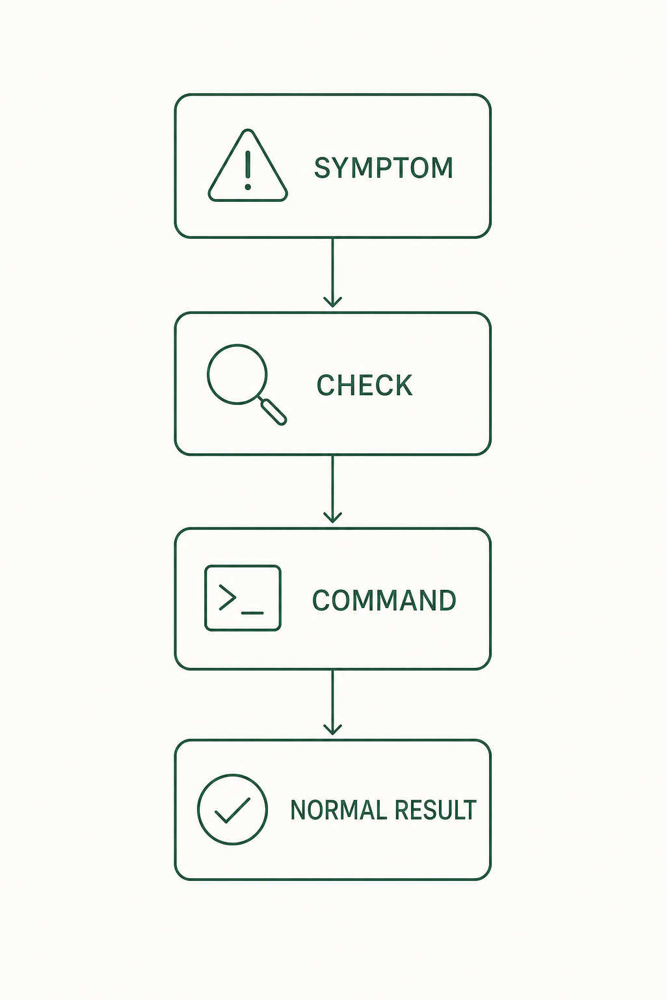

11. Troubleshooting
Find the symptom first, then follow the order: what to check, the command, the expected result.

11.1 The ooo command is not recognized
Check: ooo works only inside a Claude Code session. Make sure you did not type it in a normal terminal. It also fails without login, so complete /login first.
Check the plugin state in a normal terminal.
claude plugin listExpected result: ouroboros@ouroboros shows as enabled. If missing or disabled, reinstall:
claude plugin install ouroboros@ouroboros --forceExpected result: after installing, reopen the Claude Code session and ooo help works.
11.2 Interview works but run or status fails
Check: the plugin loaded but Core's MCP server may not be connected. Check the ouroboros server state with /mcp in Claude Code.
Run these in order inside the Claude Code session.
ooo setup
ooo updateExpected result: the MCP server is registered again. Close Claude Code completely and reopen it. For a standalone install, check ouroboros mcp info and ouroboros status health in a normal terminal.
11.3 The run seems stuck
Check: runs can take a long time in the background. Query the state first.
ooo status <session_id>Expected result: the current phase is shown. If you judge there is no progress, cancel with ooo cancel and run again.
11.4 Resume an interrupted auto session
Check: when ooo auto stops at a gate or on an error, the output keeps an auto_session_id and a resume command.
ooo auto --resume <auto_session_id>Expected result: the same auto session continues. If you lost the ID, find the session first with 11.5.
11.5 Recover a session from a closed window
Check: execution events remain in the EventStore, so sessions survive a closed window.
ooo resume-sessionExpected result: a list of running or paused sessions. Pick the one to re-attach.
11.6 The same failure repeats
Check: when repeated runs produce the same structure and the same failure, change the approach instead of adding iterations.
ooo unstuckExpected result: alternative approaches to the current problem are proposed. You choose which to use.
11.7 Uninstall
First preview what would be removed, in a normal terminal.
ouroboros uninstall --dry-runExpected result: the list of items to remove. Actually remove with ouroboros uninstall; keep the data with --keep-data. Remove the Claude Code plugin separately with claude plugin uninstall ouroboros.